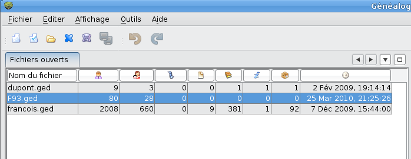

Menu de gestion des fichiers gedcom
Cette fenêtre est un peu particulière par rapport aux autres fenêtres. C'est
elle qui vous montre les fichiers gedcom qui sont ouverts.
Sur la capture d'écran ci-dessous, trois fichiers de généalogie sont
ouverts en même temps. Vous pouvez travailler sur chacun d'eux à
votre guise.

Chaque fichier gedcom est représenté sur une ligne avec plusieurs
indications :
-
Le nom du fichier gedcom,
-
Le nombre d'Individus présents dans votre généalogie,
-
Le nombre de Familles présentes,
-
Le nombre d'éléments multimédias,
-
Le nombre de Notes,
-
Le nombre de Sources,
-
Le nombre de fournisseurs d'information,
-
Le nombre de lieux de dépôts.
-
Et enfin, la date de dernière modification de votre fichier gedcom.
Cette fenêtre, à l'inverse des autres fenêtres de l'application,
ne peut pas être "déancré" (elle ne peut pas être individualisée,
détachée du restant de l'application). Elle ne peut pas être
fermée individuellement non plus.
Dans certains cas il peut être utile de minimiser cette
fenêtre pour ne pas qu'elle prenne de la place qu'il est important
de garder pour les autres fenêtres. Vous allez donc la parquer (ou
docker en anglais).
Une fonction existe pour positionner ce gestionnaire des fichiers
gedcom en position latérale, sur le côté gauche.
Pour ce faire, mettez votre curseur de souris sur le titre de
la fenêtre, et faites glisser la fenêtre du gestionnaire vers la gauche. A un
moment, vous allez voir qu'un cadre se forme sous l'aspect
d'un bouton rectangulaire. Relachez votre souris,
un bouton se forme dans le cadre gauche avec en titre "Fichiers
ouverts".
Si maintenant vous placez votre souris sur le bouton qu'est
devenu le gestionnaire de fichiers gedcom, il s'ouvre un petit
menu à son ancienne place avec un point noir (pin ou aiguille).
Cliquez sur le point noir, et votre gestionnaire de fichiers
gedcom retrouve sa place.
Vous pouvez aussi utiliser cette fonction, à savoir placer
votre souris sur le bouton créé à gauche pour que s'ouvre
la fenêtre du gestionnaire et ainsi naviguer entre vos fichiers
gedcom. Il n'est pas besoin de déparquer le menu pour y
réussir. C'est une fonction très puissante de l'application.